Instrument Panel / Radio / Consoles
70 parts Out of stock
Out of stock1992 - 1996 Dodge Viper RT/10 Quartz Lower Right Dash Fascia Bolster - 0MJ80RD5
Part # 0MJ80RD5
$110.00
 Out of stock
Out of stock1992 - 1996 Dodge Viper RT/10 Tachometer - 04642131
Part # 04642131
$85.00

1992 - 2002 Dodge Viper Cigarette Lighter Power Outlet Shell - 3747633
Part # 3747633
$36.00

1992 - 2002 Dodge Viper Trim Panel Retainer 6503709
Part # 6503709
$2.95

1992 - 2010 Dodge Viper Cigarette Lighter Outlet Cap - 04595522 56008852
Part # 56008852 4595522 53128244
$4.00
 Out of stock
Out of stock1992-1995 Dodge Viper Bezel, Center Dash Instrument Panel 0HV33MD5
Part # 0HV33MD5
$400.00
 Out of stock
Out of stock1994 - 2010 Dodge Viper Cigarette Lighter Assembly - 04685370
Part # 4685370
$22.00

1996 - 1997 Dodge Viper Instrument Panel Fascia (Dash) - 0LB39SX4AB
$449.00

1996 - 1998 Dodge Viper Center Console in Black - 0PF25TX7
Part # 0PF25TX7
$999.00
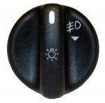
1996 - 2002 Dodge Viper Headlamp Knob - 04848135
Part # 4848135
$99.00
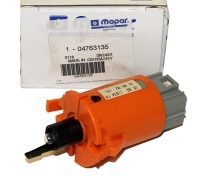
1996 - 2002 Dodge Viper Headlamp Switch -used- 04763135
Part # 4763135
$109.00
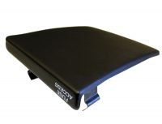
Out of stock1996 - 2002 Dodge Viper Interior Fuse Box Cover - 04848773AB
Part # 04848773AB
$120.00
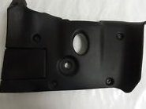
Out of stock1996 - 2002 Dodge Viper Lower left Dash Fascia Bolster - 0QN71BX7AC
Part # 0QN71BX7AC
$625.00

1996 - 2002 Dodge Viper Rubber Inner Gear Shift Boot - 04848038
Part # 04848038
$91.00

1997 - 2002 Dodge Viper Ash Tray - 0D221SX8
Part # d221sx8
$60.00

1998 - 2002 Dodge Viper GTS Center Radio Bezel in Black - 0KS79JX8AD ACR
$269.00
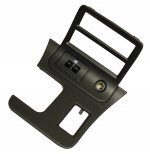
1998 - 2002 Dodge Viper RT/10 Instrument Panel Bezel - Used only - 0PK84JX8AD
$199.00
 Out of stock
Out of stock1998 - 2002 Viper GTS Instrument Panel Bezel - 0KS79JX8AD Dodge
Part # 0KS79JX8AD
$269.00
 Out of stock
Out of stock1999 - 2002 Dodge Viper Center Console in Black - 0PF251X9AF
Part # 0PF251X9AF
$999.00

1999 - 2002 Dodge Viper Center Console in Cognac - 0PF251XUAF
Part # 0PF251XUAF
$500.00

1999 - 2002 Dodge Viper Instrument Panel Fascia (Dash) - 0LB39JX8AG
Part # 0LB39JX8AG
$493.00

2003 - 2006 Dodge Viper Radio 6-CD Disk Changer w/Equalizer - 56038622AJ 05064038AC
$600.00
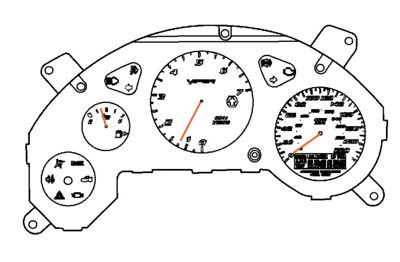
Out of stock2003 - 2006 Dodge Viper SRT10 Export Instrument Cluster - 05029722AC
Part # 5029722AC
$825.00

2003 - 2006 Dodge Viper SRT10 Steering Column Cover Panel - 0XT29DX9AB
Part # 0XT29DX9AB
$688.00
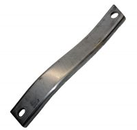
2003 - 2008 Dodge Viper SRT10 Instrument Panel Brace - 05029098AA
Part # 5029098AA
$10.00
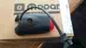
Out of stock2003 - 2010 Dodge Viper Alarm Indicator Lamp 05029051AB
Part # 05029051AB
$48.00
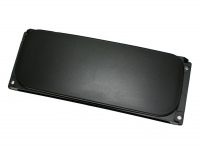
2003 - 2010 Dodge Viper SRT10 ACR Radio Delete Plate
$22.00
 Out of stock
Out of stock2003 - 2010 Dodge Viper SRT10 ACR Radio Delete Plate 5291230AC
Part # 5291230AC
$999.99
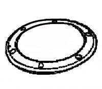
2003 - 2010 Dodge Viper SRT10 Aluminum Shift Boot Mounting Ring - 05093230AA
Part # 05093230AA
$181.00

2003 - 2010 Dodge Viper SRT10 BLACK Stitched Shift Boot - 0XP191X9AA
Part # 0XP191X9AA
$99.99
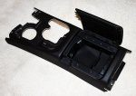
Out of stock2003 - 2010 Dodge Viper SRT10 Center Console, Lid, Latch, & Mat - 1JX801D5AA
Part # 1JX801D5AA
$330.00

2003 - 2010 Dodge Viper SRT10 Dash Panel Right Heat Shield - 05029318AA
Part # 5029318AA
$38.00
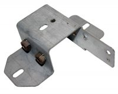
2003 - 2010 Dodge Viper SRT10 Left Side Dash Bracket - 05029189AA
Part # 5029189AA
$25.00
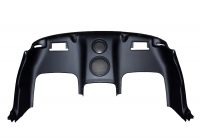
2003 - 2010 Dodge Viper SRT10 Roadster Bulkhead Panel - 0TS04DX9AB
Part # 0TS04DX9AB
$895.00
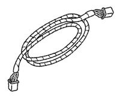
2003 - 2010 Dodge Viper SRT10 Satellite Receiver to Radio Cable - 05066203AA
Part # 05066203AA
$69.00
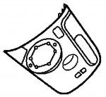
2003 - 2010 Dodge Viper SRT10 Shift Console Bezel - 1CH38DX9AB 0XP201X9AA
$195.00

2003 - 2010 Dodge Viper SRT10 Sirius Radio Receiver & Antenna - 82206488AB
Part # 82206488AB
$425.00
 Out of stock
Out of stock2003 - 2010 Dodge Viper SRT10 Upper Instrument Panel & Pad - 0TS33DX9AD
Part # 0TS33DX9AB
$1,999.00

2003 - 2010 Dodge Viper SRT10 Upper Instrument Panel & Pad Assembly in RED - 0TS33DX9AD
Part # 0TS33DX9AB
$1,999.00
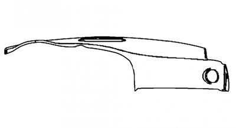
2003 - 2010 Dodge Viper SRT10 Upper Instrument Panel & Pad in GRAY - 0TS33DX9AD
Part # 0TS33DX9AB
$1,999.00
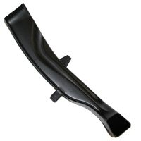
2003 - 2013 Dodge SRT Viper Heater Floor Duct - 04865809AA
Part # 4865809AA
$15.00

2003-2006 Dodge Viper Instrument Cluster Speedometer Tachometer 04865589AE
Part # 04865589AE
$1,150.00

2003-2006 Dodge Viper Instrument Cluster Speedometer Tachometer 5030485AC
Part # 5030485AC
$350.00

2003-2010 Dodge Viper SRT10 Speaker Grill Dash Left Tweeter 0TV67DX9AA
Part # 0TV67DX9AA
$39.00

2003-2010 Dodge Viper SRT10 Speaker Grill Dash Right Tweeter 0TV68DX9AA
Part # 0TV68DX9AA
$29.00
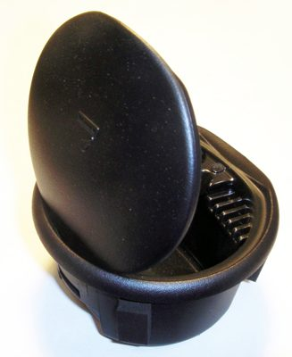
2003-2016 Dodge Viper SRT10 Ashtray Assembly - 05108051AA
Part # 05108051AA
$47.00
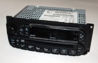
Out of stock2005 - 2008 Viper Radio AM/FM with CD EXPORT VERSION - 05091610AC Dodge
Part # 05091610AC
$295.00

2006 - 2010 Dodge Viper SRT10 Console Shift Ring Hex Socket Screw - 5093298AA
Part # 5093298AA / 6036430AA
$8.49
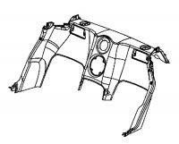
2006 - 2010 Dodge Viper SRT10 Coupe Bulkhead Panel - 1BH89DX9AC
Part # 1BH89DX9AC
$585.00

2008 - 2010 Dodge Viper SRT10 Radio AM/FM/CD and MP3 - 05064575AA
$612.00
 Out of stock
Out of stock92 - 96 VIPER AMLIFIER (AUDIO) 04643022 04709205
Part # 04709205 04643022
$150.00
 Out of stock
Out of stockUSED 1997 - 2010 Dodge Viper Door Speaker Grill - 0SL12DX9AA
Part # 0SL12DX9AA
$50.00

1996 - 1997 Dodge Viper GTS Center Radio Bezel in Black - 0KS79MX4AB
$550.00
1997 - 2010 Dodge Viper Door Speaker Grill - 0SL12DX9AA
$90.00
1998-2002 Dodge Viper Passenger Air Bag with Cover (Textured Finish) 0RW19JX8AB
$1,775.00
Out of stock2003 - 2010 Dodge Viper SRT Instrument Dash Bezel 0WA87DX9AA
Part # 0WA87DX9AA
$490.00
Out of stock2003 - 2010 Dodge Viper SRT10 Custom Leather Center Console w/ Red Stitching
Part # 1JX801D5AA
$825.00
Out of stock2003-2006 Dodge Viper Radio AM/FM with 6-CD Changer [JAA]
Part # 05091507AE
$612.00
Out of stock2003-2010 Dodge Viper SRT10 Audio Amplifier - Recycled Take Off 04865994AE
Part # 4865994AE 4865994ac
$275.00
2004 2008 Dodge Viper SRT10 Gauge Pac Mopar Part 5029636AA
Part # 5029636AA
$621.00
2008 - 2010 Dodge Viper SRT10 Front Air bag Sensor - 4896061AB
Part # 4896061AB
$175.00
2011 Chrysler Dodge Jeep RB1 Navigation Update Disc - 05064033AK
$147.00
2012 Chrysler Dodge Jeep RB1 Navigation Update Disc - 05064033AL
$147.00
92-96 VIPER 320 KPH SPEEDOMETER 04746401 FITS 92-02
$625.00
Out of stock92-96 VIPER RT10 180 MPH SPEEDO 04728733 04642130 FITS 92-02
Part # 04642130 04728733
$625.00
Out of stock93-96 VIPER DASH BEZEL / FASCIA, BLACK, W/GLOVE BOX DOOR, 0PE85RX4 0PH10RX4AB
Part # 0PE85RX4 0PH10RX4AB
$595.00
Out of stock96-02 Dodge Viper Drivers/Left Air bag (textured finish found in 98-02) 0LB45JX8AB
Part # 0LB45JX8AB
$2,100.00
96-02 VIPER FRESH AIR PLENUM HEATER BOX 04763858AC
$500.00
96-98 VIPER 200 MPH SPEEDO 04763850AB FITS 92-02
$525.00
96-98 VIPER 360 KPH SPEEDO 04763853AB FITS 92-02
$625.00